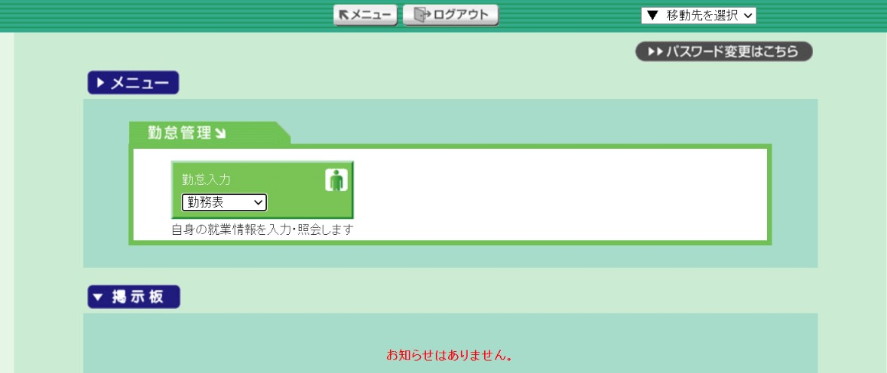
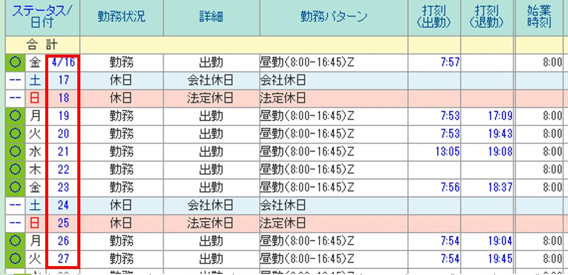
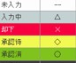
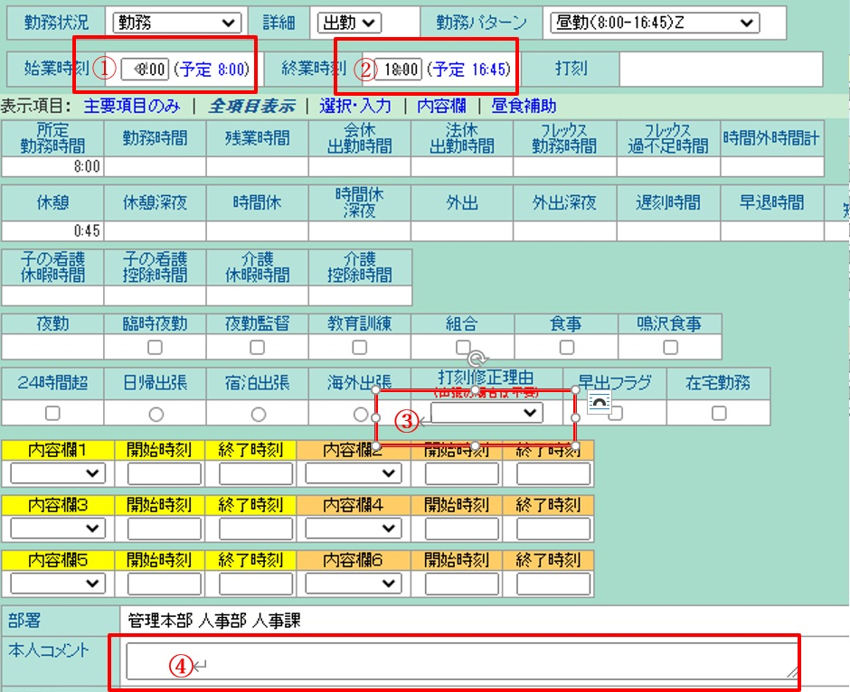
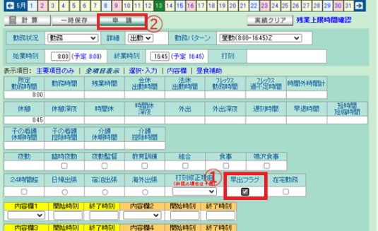
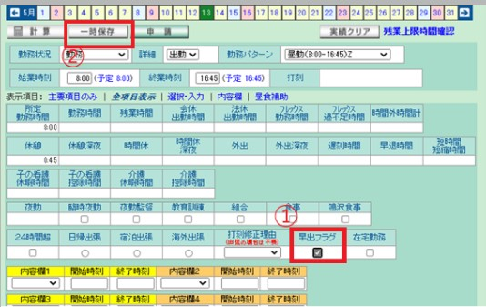
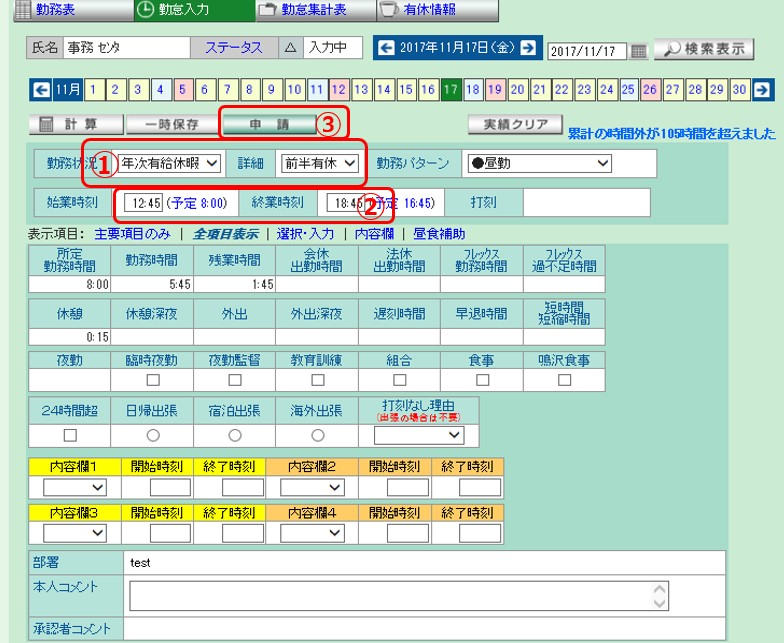
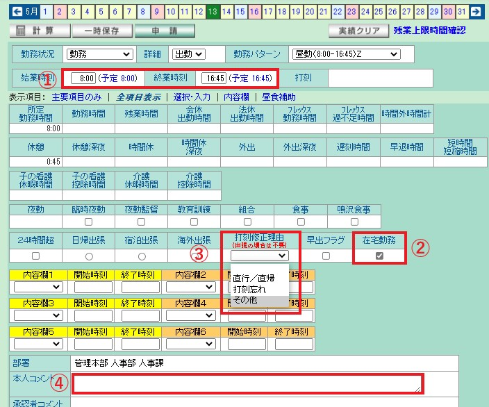

Log@Time Guideline
1, Basic Operation
Log-in
・Click below link to browse.
http://mtaf15/LT3/
・Enter your ID and Password
(The default setting for the ID and Password will be your employee number)
Next Image will appear, select the “勤務表-Kinmu Hyou“ (Work Schedule)
Time Recording
Every time you tap your employee IC Card, the data will automatically reflect in Log @ Time System.
Below will be the following image.
Red Frames mark is the time stamping column.
By tapping the card (log in and log-out), it will reflect in the column. Log In(出勤-Shukkin) is on the left side and Log-out (退勤-Taikin)is in the right (Please see red frames image below)
Make Time Adjustment & Corrections
For the time adjustment, you could also correct and make adjustment by double clicking the date you wish to change. (see below red frame for dates)
※However, If the status is marked with “〇” color green, it’s impossible to change yourself. You may check the status on the very left side of the column (ステータス/日付). Ask your Leader or your Manager to make the adjustment for you if it’s already marked “O”.
Status
By clicking the date for adjustment, the image below will appear.

Proceed the adjustment by changing the appropriate time.
● Red Frame ①should be the Log-in Time
● Red Frame ②should be the Log- Out time
● Red Frame ③the Reason for Time Adjustment
Adjustment Reason (打刻修正理由-Dakoku shuusei riyuu)
Provide your main reason by selecting the following:
Go directly and return home（直行直帰）
Forgot to tap the card（打刻忘れ-dakoku wasure）
Others（その他）
● Red Frame ④ Comment
If you Selected “Others”、you need to provide in the comment section the reason why you need to make the adjustment in details.
After completing above fields, click “申請-Shinsei” to Apply and you’re Done.
2, Paid Leave & Special Leave Adjustment
Paid Leave
1) Select the Annual Paid leave “年次有給休暇-Nenji Yuukyu Kyuuka” from the selection as shown in the image below.
2) Click the “申請-Shinsei” to apply.
Special Leave
Two types of Special Leave,
特休-Tokkyuu（有給-Yuukyuu、Paid）
特休（無給-Mukyuu、Unpaid）
Please select which type of special leave applicable to you.
To make an application, please refer to the sample image provided below for the details:
For the English translations, please refer below and select the type of special leave you wish to apply.
特休（有給）- Special (Paid) Leave
結婚休暇- Marriage Leave
子女出産休暇- Maternity Leave
就労許可手続- To obtain Working Permit / Residence card Extension
法要休暇- Leave to attend Buddhist memorial services
忌引休暇- Bereavement Leave
公職休暇- Public Work Leave
罹災休暇- Emergency Disaster Leave
伝染病予防- Infectious Disease Prevention Emergency Leave
公傷休暇- Injury Leave
転勤休暇- Transfer Leave
生理休暇- Menstrual Leave
その他休暇（有給）- Other Special Paid Leaves
特休（無給）- Special (Unpaid)Leave
子の看護- Child Care
子の看護- Child Care (AM/Half-day)
子の看護- Child Care (PM/Half day)
介護- Nursing care
介護（前半）- Nursing Care ( AM/Half day)
介護（後半）- Nursing Care (PM/Half day)
その他休暇（無給）- Other Special (Unpaid) Leave
3. Others
Day off Work
Please register and adjust the time record following the procedure below.
* kindly check the status carefully, take note that if the status marked as holiday, your working hours may not be recorded so please check and ask for approval if necessary.
Red Frame ① - Select the ”勤務-Kinmu” for the status.
*勤務 means – Work.
Red Frame ② - Select the “休日出勤(Kyuujitsu Shukkin)-Day-off Work,
Choose either for No substitute Holiday（代休なし-Daikyuu Nashi）or Have Substitute Holiday (代休あり-Daikyuu Ari)
Red Frame ③ - Select one that matches your work pattern.
Click “申請” to Apply.
Early Attendance
For Early Attendance please follow the steps given below.

Red Frame ① - Put the check mark in the “早出フラグ-Hayade” (early attendance flag)
Red Frame ② - Click ”申請“ to Apply.
*Advance Time Recording

Red Frame ① - Put the check mark in the “早出フラグ” (Early attendance flag）
Red Frame ② - Select the 一時保存、Ichiji Hozon (Save Temporarily)
※It is not necessary to click the “申請”-Shinsei as this operation requires approval.
Half-Day Work/Leave

Red Frame ① - Select the ”年次有給休暇-Nenji Yuukyu kyuuka” for the status and select the “前半有休-Zenhan Yuukyu” or “後半有給-Kouhan Yuukyu”
前半有休 - Paid leaves for AM/Half-day
後半有休 - Paid leaves for PM/Half-day
Red Frame ② - should be the Log-in Time and the Log- Out time
Red Frame ③ - Click “申請” to Apply.
Work From Home
Follow the steps below on how to manage the Log-in time when Working from Home.

Red Frame ① - Log-In the time you start working. Ex: 8:00
Red Frame ② - Click the Check button at the “在宅勤務-Zaitaku Kinmu”section.
Red Frame ③ - Click arrow selection and select“その他”.
Red Frame ④ - Type “Work from Home” in the Comment section.
Click “申請”(Shinsei) to submit the Application.